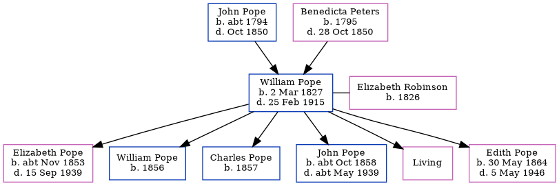

William Pope 1827 - 1915
[ Home ] | [ Calendar ] | [ Surnames Index ] | [ Errors ] | [ Family History ]The child of John Pope and Benedicta Peters, William Pope, the first cousin four-times-removed on the father's side of Nigel Horne, was born in Folkestone, Kent, England on 2 Mar 18271,2,3, was baptised there at Zion Chapel, Fenchurch St on 27 May 1827 and married Elizabeth Robinson (with whom he had 6 children: Elizabeth Elliott, William Robinson, Charles, John Isaac, Annie and Edith Abigail, along with 1 surviving child) in Bermondsey, London, England around May 18526. Like his father, he was a builder.
During his life, he was living at Fancy Street in Folkestone on 6 Jun 18411, on Mill Lane in Folkestone on 30 Mar 185110 and on 7 Apr 18618, at Fancy Street in Folkestone on 2 Apr 18717 (the same place as his parents had been living on 6 Jun 1841), and at East Cliff Gardens in Folkestone on 31 Mar 19019.
He died on 25 Feb 1915 at 13 Marine Crescent in Folkestone3,4,5 and was buried at Cheriton Road Cemetery, Folkestone on 27 Feb 1915.
Parents
- John Isaac was born c. 1794
- Benedicta was born in 1795
Children
- Elizabeth Elliott was born c. Nov 1853
- William Robinson was born in 1856
- Charles was born in 1857
- John Isaac was born c. Oct 1858
- Edith Abigail was born on 30 May 1864
Citations
- 1841 England, Wales & Scotland Census - Findmypast (was age 14 and the son of the head of the household)
- England & Wales Non-Conformist Births And Baptisms - Findmypast
- England & Wales deaths 1837-2007 - Findmypast
- England Billion Graves cemetery index - Findmypast
- Kent, Folkestone Cheriton Road Cemetery Memorial Inscriptions - Findmypast
- England & Wales Marriages 1837-2005 - Findmypast
- 1871 England, Wales & Scotland Census - Findmypast (was age 47 and the head of the household)
- 1861 England, Wales & Scotland Census - Findmypast (was age 34 and the head of the household)
- 1901 England, Wales & Scotland Census - Findmypast (was age 74 and the wife's brother of the head of the household)
- 1851 England, Wales & Scotland Census - Findmypast (was age 24 and the head of the household)
Media
Folkestone, Hythe, Sandgate & Cheriton Herald 27 Feb, 1915

England & Wales Non-conformist births and baptisms - TNA/RG4/BAP/439858
England Births & Baptisms 1538-1975 - R_949972751
England & Wales deaths 1837-2007 - BMD/D/1915/1/AZ/001025/018
England & Wales Marriages 1837-2005 - BMD-M-1852-2-MZ-000297-026
1871 England, Wales & Scotland Census - GBC/1871/0014378529
1901 England, Wales & Scotland Census - GBC/1901/0005548138
1851 England, Wales & Scotland Census - GBC/1851/0005967923
Kent, Folkestone Cheriton Road Cemetery memorial inscriptions - GBPRS/KENT/MIS00007280
England Billion Graves cemetery index - US/BMD/BILLION/P8/0047761
Family Tree
Map
Generated by ged2site. Last updated on Jul 3, 2024
Known Issues
Burial date (27 Feb 1915) has no citations
Listed in the residence for 31 Mar 1901, but spouse Elizabeth Robinson is not